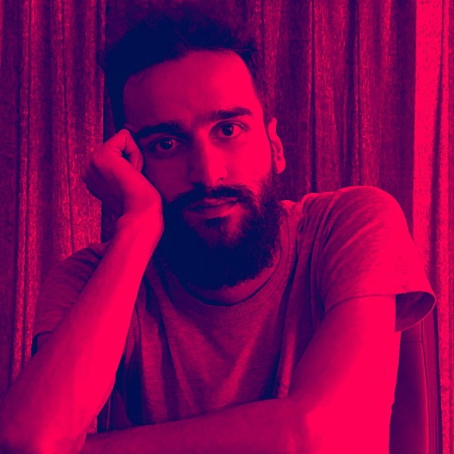

About
With over 13 years of consistent professional growth in a single organization, I have cultivated a versatile expertise across IT infrastructure, Front-end development, R&D, and DevOps. My career is grounded in a unique academic foundation of Atomic Physics and Software Engineering, which fuels my analytical approach to solving complex technical challenges. Having also served as a Clerk at a notary office, I bring a disciplined attention to detail to every project. I am a lifelong otaku, gamer, and tech enthusiast who believes every experience is a tool—and I use each one as a weapon to drive innovation and achieve success.

Developer, R&D Specialist & IT Specialist.
For the past 13 years, I have dedicated my professional journey to a single organization. This long-term commitment has been a cornerstone of my growth, allowing me to evolve through critical roles—starting as an IT Specialist, transitioning into a Developer, and ultimately mastering the complexities of DevOps, Networking, and Virtualization.
- Birthday: 1992 November 10
- Website: github.com/majidzamanian/resume.git
- Phone: 0901 455 5411
- City: Tehran, Pardis
- Age: 33
- Degree: Master
- Email: majid.zamani71@gmail.com
- Open to work: Yes
Alongside my technical responsibilities, I have worked extensively in Research and Development, where I have explored emerging technologies, evaluated innovative solutions, and transformed ideas into practical and reliable outcomes. I am also a Senior OSINT Specialist, experienced in gathering, verifying, analyzing, and interpreting publicly available information to support research, risk assessment, and informed decision-making.
Skills
Core Expertise: DevOps, Linux (LPIC-1/2), Virtualization, and Network Security. Development & Data: Proficient in .NET/.NET Core, Python, Java, Front-end, SQL/Oracle Databases, Hadoop, and OSINT analysis.
Background
Sumary
Majid Zamanian
Have a rich work experience from a combination of R&D and OSINET that has enhanced my development and production skills.
- Tehran, pardis
- 09014555411
- Majid.zamani71@gmail.com
Education
Bachelor & Software engineering
2016 - 2021
Islamic Azad University, Tehran North Branch
To become a complete software engineer
Unfinished Bachelor & Atomic and Molecular Physics
2011 - 2014
Payame Noor University, Tehran Center
I gained valuable experience in basic sciences and physics.
Professional Experience
Rayaneshar Farhang Institute
March 2012 - Present
Tehran, iran
- Professional experience in HP server implementation and maintenance.
- Familiarity with networking concepts, setup, and support
- Proficiency in Active Directory, user management, access control, and Group Policy
- Experience with virtualization concepts and tools (VMware, ESXi, VirtualBox)
- Experience in server installation, setup, maintenance, and support Familiarity with monitoring systems (PRTG, Zabbix)
- Implementation of Python micro-modules
- Implementation of specialized translation and search tools
- Developing innovative technical problem-solving methods through R&D
- Experience with Big Data, data crawling, and dashboard creation
- Familiarity with cybersecurity concepts
- Experience implementing online micro-systems
- Experience in website UI/frontend design and improvement
- Familiarity with DevOps concepts and the Linux operating system
- Familiarity with Agile/Scrum methodologies
- Familiarity with the Jira project management tool
Notary Public Office Secretary
March 2011 - March 2012
Tehran, iran
- Handling all administrative and banking tasks associated with the role of a notary office secretary.
- Learning banking operations and networking
- Familiarity with financial matters
- Familiarity with documentation procedures
- Familiarity with document drafting
- Developing interpersonal relationships
- Learning administrative and professional interaction processes